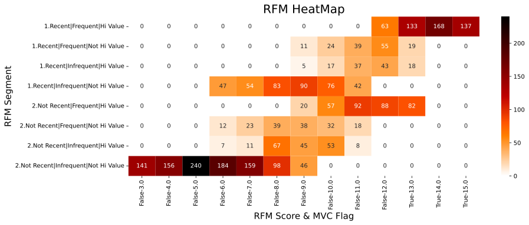
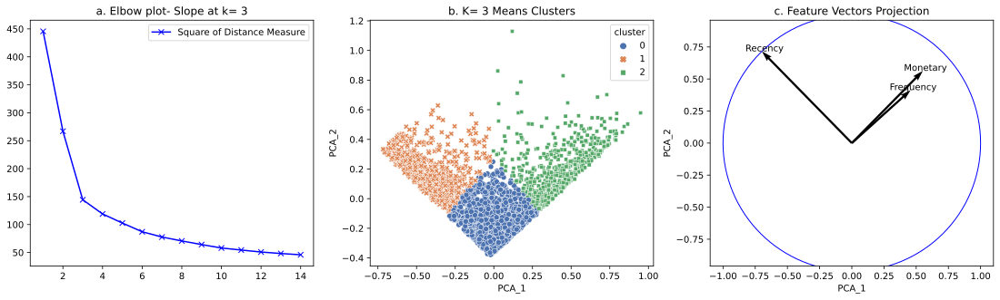
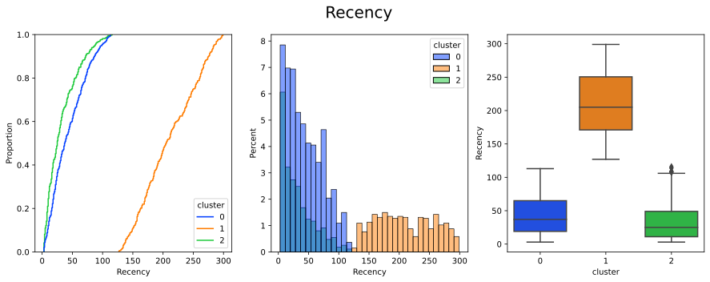
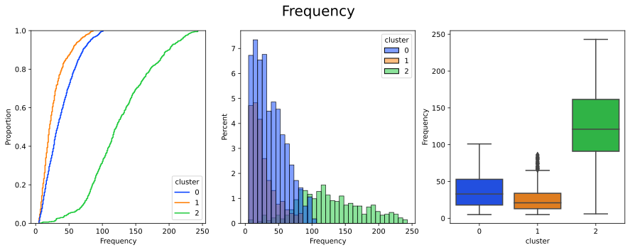
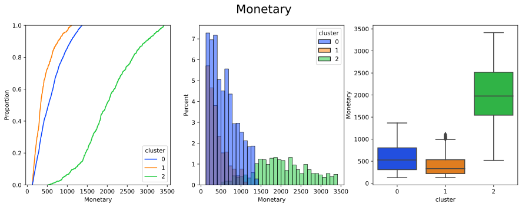
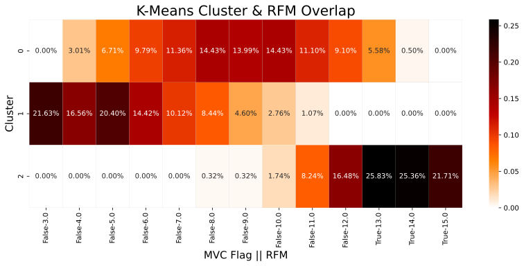
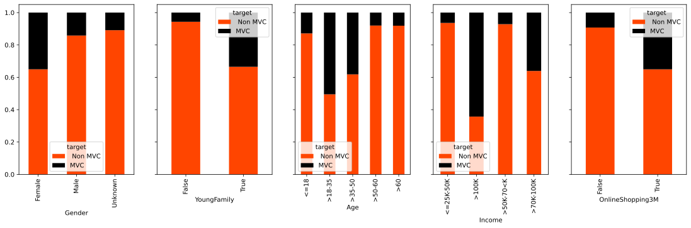
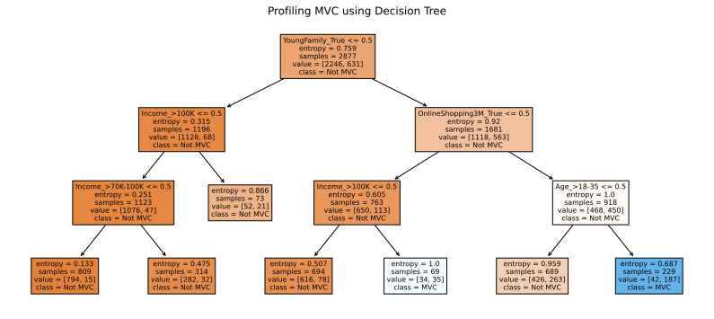

Segmentation & Profiling
You can't grow what you can't see. RFM scoring establishes who your best customers are; K-Means clustering validates it without assumptions; Decision Tree profiling answers the "who are they" question with actionable rules. The result: young families, 18–35, recent online transactors — a targetable, acquirable persona with a measurable revenue upside.
The capability compounds when real-time omnichannel signals feed continuous clustering — value migration surfaces in the model before it surfaces in the numbers, and retention plays before churn is even visible.
Many products, technology and services companies are looking at digital channels as an opportunity to transform themselves from operation/ technology into consumer company. Transforming to a consumer first organization requires fingerprinting consumers, understanding consumer behavior. More importantly, understand and improve the effectiveness of digital transformation through consumer engagement at segment level. The following discourse runs through the art of the possible with respect to segmentation/ profiling.
Recency, Frequency & Monetary (RFM)

A Recency, Frequency and Monetary (RFM) framework provides a baseline method to aggregate consumer behavior and identify segments of consumers. The basic hypothesis is that consumers with high recency, frequency and monetary value are most valuable to a company. In the above example, the last three columns with high RFM value (>13) and Most Valuable consumer = True belong mostly to the High Recency/ Frequency/ Monetary segment as shown by RFM_label. Programmatically the RFM, labels and Most Valued Consumer (MVC) are defined as follows:
df['R_Score']= pd.qcut(df.Recency,5, labels=[5,4,3,2,1]).astype(float)
df['F_Score']= pd.qcut(df.Frequency,5, labels=[1,2,3,4,5]).astype(float)
df['M_Score']= pd.qcut(df.Monetary,5,labels= [1,2,3,4,5]).astype(float)
df['RFM']=df.R_Score+df.F_Score+ df.M_Score
df['RFM_Score']= pd.qcut(df.RFM,5,labels= [1,2,3,4,5]).astype(float)
# Most Valuable Consumers
df['MVC']= df.RFM>= 13
# Segments
df['RFM_labels']= list(zip(np.where (df.R_Score >= 4, '1.Recent', '2.Not Recent'), np.where (df.F_Score >= 4, 'Frequent', 'Infrequent'), np.where (df.M_Score >= 4, 'Hi Value', 'Not Hi Value')))
df['RFM_labels']= df.RFM_labels.agg('|'.join)
This is a easy means of segmenting behavior not only for consumers, but even for machines, app instances etc and can be derived across transaction (debit versus credit) and channel types. It's intuitive and easy to build and interprete. Not just to answer marketing questions but to help operations to isolate cohorts of faltering devices in a fleet. As variability in business environment and the complexity of consumer engagementgement increases, it becomes imperative to consider more robust technique. Using unsupervised learning to cluster consumers using their omni channel behavior can be interesting approach. While not awefully sophisticated K-Means clustering works well with data for few thousand to a few hundred thousand consumers
K- Means Clustering

The above diagram is the result of clustering of the said RFM data as mentioned earlier. In diagram (a) the Elbow plot shows significant change in slope at K=3 and we choose to build the cluster for K=3. Diagram (b) is the two diensional representation of the multi dimensional space in the form of principal components (PCA). This shows 3 well formed clusters in a wedged shaped profile. Investigating this furter, (c) is a quiver plot of the RFM feature vectors as projection on to the 2D PCA space. The Recency and the Monetary features are orthogonal to each other, meaning little or no correlation/ projection on each other. However, the Frequency and Monetary value features are very closely aligned. This is usually observed in scenario where product/ service catgeories or pricing variability within category is less.

The above diagram shows the distribution of Recency values. cumulative probabiluty distribution of cluster= 2 clearly stands out. The box plot for recency for 2 shows hat the recency values are a lot higher than for both cluster 0,1. Why at all these 2 clusters are seperate is a good question and needs to be looked at. The observations are also true for Frequency and Monetary value as well


Heuristics versus Machine Learning

Merging the RFM segment and the K-Means clusters provides interesting insights. Cluser=2 nominally coincides with MVC consumers. So far we answered the question "what" have they done? "How" have a purchased? Not so much the "who?" question. The "who" question can be answered through profiling the consumer data
Profiling
To demonstrate how profiling works we shall interprete and try to answer the "who?" question for cluster=2. For a recent convert, it is hard to get an abundance of consumer profile information. There are legal nd privacy issues as well. Some industries may mandate the capture of certain consumer profile data but in most cases there are stipulations around how not to use them. More importantly, the MAANG companies over time have acquirdd vast quantities of consumer profile, psychographics, demographics information through permission and use the data in heir own ad marketing programs. There are data providers who seek to provide high quality primary data about consumers. In our example we choose 5 basic variables whose distributions with respect to MVC are shown below

It does appear that MVCs are distributed in certain pockets of the consumer base. A standard way to profile consmers of a certain segment is to classify them against other segments- MVCs versus non-MVC for example. A simple Decision Tree with max_depth=4 has been developed for illustrative purposes

While this model can be significantly improved and generalized through ensembling and hyper-parameter tuning, the current decision tree has some interesting insights. The classification criteria used here is entropy function and the split decision uses information gain. The value of Entropy function is between 0 an 1. 1 signified complete disorder and 0 means complete order. The right hand most bottom leaf has a entropy of ~.7 translating to about 80% of the node to be MVCs. This just shows that personas fulfilling certain criteria may be valuable in the future. Generalized business rules can be generated from the tree.
The following is the business rule that can be generated from the decision tree to score/ segment incoming consumers into a MVC/ Non MVC group
|--- YoungFamily_True <= 0.50 | |--- Income_>100K <= 0.50 | | |--- Income_>70K-100K <= 0.50 | | | |--- class: 0 | | |--- Income_>70K-100K > 0.50 | | | |--- class: 0 | |--- Income_>100K > 0.50 | | |--- class: 0 |--- YoungFamily_True > 0.50 | |--- OnlineShopping3M_True <= 0.50 | | |--- Income_>100K <= 0.50 | | | |--- class: 0 | | |--- Income_>100K > 0.50 | | | |--- class: 1 | |--- OnlineShopping3M_True > 0.50 | | |--- Age_>18-35 <= 0.50 | | | |--- class: 0 | | |--- Age_>18-35 > 0.50 | | | |--- class: 1
OK, so what's the point of all this?
As companies transform digitaly and onboard identifiable consumers, it is neccessary to identify groups in the population of newly acquired consumers are performant and improvments over the non-consumer lines of business. Customer segmentation using hyper dimensional clustering techniques helps to create groups of equivalent consumers in a loss function optimized framework. Once that is achieved and clusters determined, it is necessary to understand who they are. That helps in two ways:
- Fine tune product, service value proposition for specific consumer persona
- Target newly acquired consumers personas with offers when purchase patterns are not available based on historical performance
In our case we can look at the business rule to see that Young Family, aged betweeb 18-35 and who shopped online in the past 3 months are MVCs. A robust model can help in relliably estimating the business opportunity size and designing engaging value proposition for the consumers
( The spirit of this work is from a recently concluded Data Science engagement, the base RFM data is generally available online and the consumer profile information is engineered with bit of imagination!